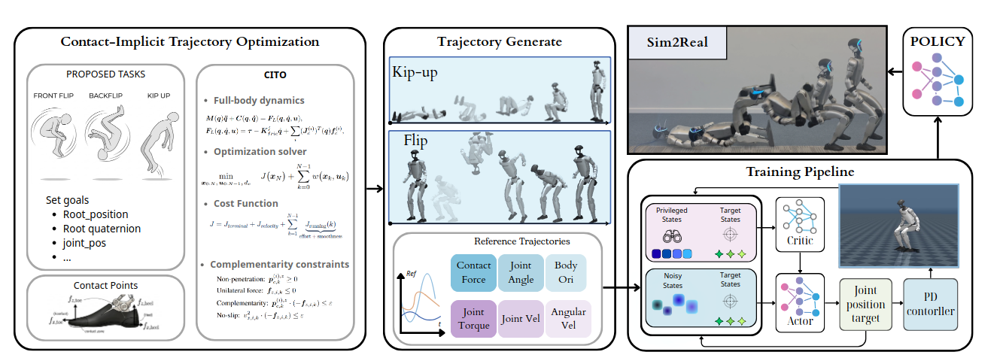

Achieving highly dynamic skills, such as flips or kip-up, on humanoid robots remains an open challenge. it requires an imitation learning framework capable of not only fidelity tracking physically feasible reference trajectories, but also executing them robustly in the presence of external disturbances and sim-to-real gaps. We propose CitoMimic, a training pipeline that combines Contact-Implicit Trajectory Optimization (CITO) with a robust motion-tracking learning framework. CITO automatically discovers optimal contact schedules and generates dynamically consistent whole-body reference trajectories without requiring manually pre-specified contact modes. These optimized trajectories then serve as rich references for training a robust policy via the motion-tracking learning framework, which incorporates torque and foot force tracking based rewards to facilitate accurate motion learning. CitoMimic performs diverse hard skills while maintaining robustness across terrain diversity and external disturbances.

Unitree G1
Unitree G1
@article{,
title={},
author={},
booktitle={},
year={2026}
}